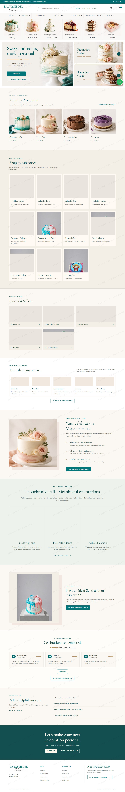
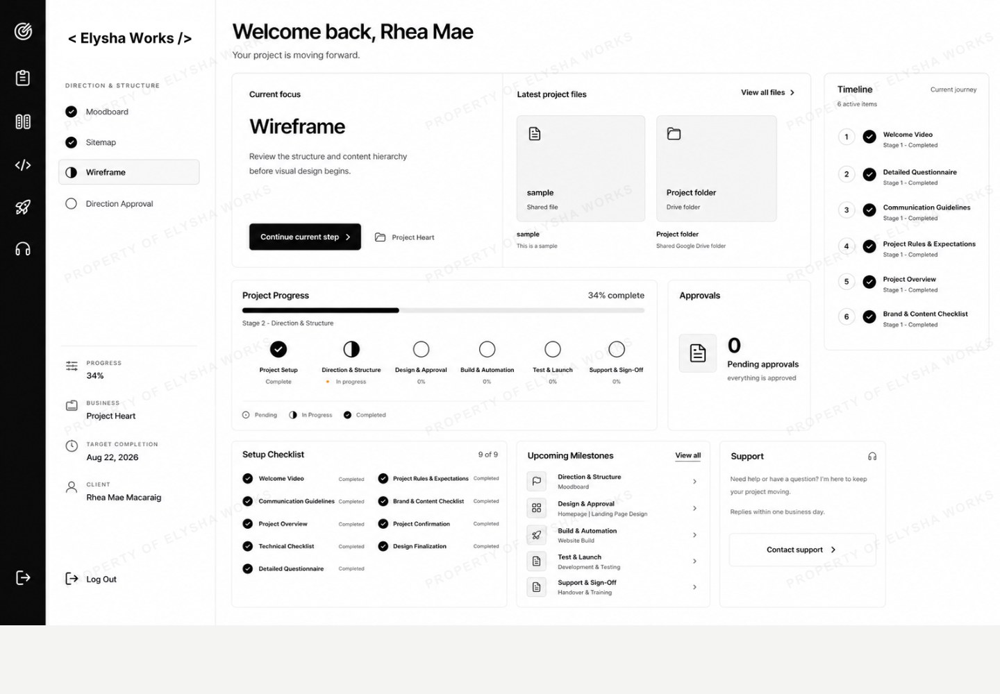
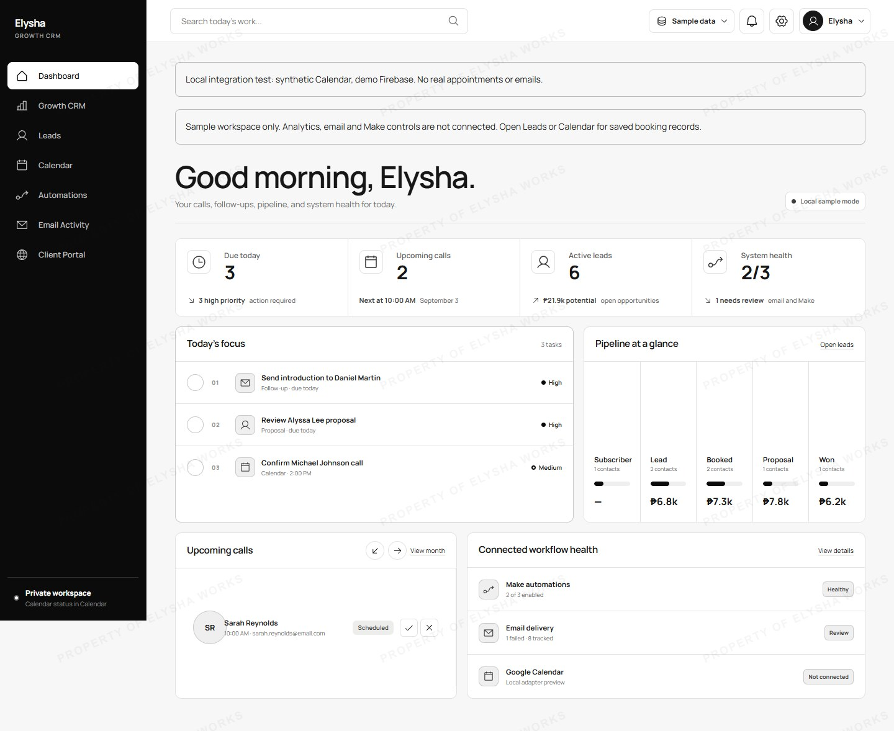
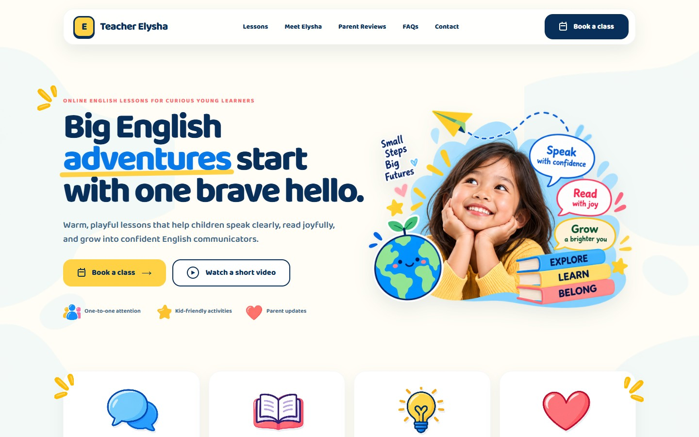

Paid project
La Jaysiedel Cakes
E-commerce website
Built an elegant online storefront that presents handcrafted cakes clearly and makes ordering feel simple.
View project directionFor service professionals
I help service professionals attract the right clients, capture inquiries, and create seamless experiences that build trust and drive action.
Available for local and international projects.
How I help
One connected system. Five practical stages.
Strategic, search-ready pages that build trust and convert visitors.
Clear paths that turn interest into inquiries and qualified leads.
Seamless scheduling that makes it easy for clients to book.
Timely emails that build confidence and keep conversations moving.
Organized client systems that track, nurture, and close more clients.
Selected work
A mix of paid work, internal tools, and a self-directed case study.

Paid project
E-commerce website
Built an elegant online storefront that presents handcrafted cakes clearly and makes ordering feel simple.
View project direction
Internal project
Custom web application
Created a focused workspace where clients can follow projects, messages, files, and approvals in one place.
View project direction
Internal project
CRM system
Developed a central system for leads, appointments, pipeline activity, and consistent follow-up.
View project direction
Self-directed case study
Service website
Designed a joyful, trustworthy path that helps parents understand the lessons and book the next step.
View project directionHow I work
We start with a conversation to understand your goals and audience.
I map the journey, define priorities, and align on the right approach.
I design and develop with clarity, collaboration, and attention to detail.
We launch with confidence and keep improving together.
About
I’m a funnel strategist, web designer, and automation builder helping service professionals create clearer digital client journeys.
With a background in Computer Science and graphic design, I combine strategy, design, development, and systems so each step—from first visit to follow-up—feels connected and easier to manage.
I clarify your offer, audience, and path to conversion so your message connects and converts.
I design and build conversion-focused websites and funnels that are clear, intuitive, and on-brand.
I set up smart automations that streamline follow-up, nurture leads, and keep your pipeline moving.
Is this a good fit?
Does this sound familiar?
Services & investment
Starting at $1,500
Starting at $1,500
Starting at $1,000
Custom quotation
$30/hour
Final investment depends on scope, content, integrations, and support.
FAQ
Clear answers about projects, collaboration, and what to expect.
I work with service professionals and service-based businesses that need a clearer website, inquiry, booking, follow-up, or client-management journey.
Yes. Projects can be completed remotely with clients in the Philippines and worldwide. Communication, reviews, and approvals are managed online.
Most focused website and funnel projects take four to eight weeks. CRM and custom application timelines are confirmed after discovery because scope and integrations vary.
No. We can begin with your core offer, goals, and available materials. I can help organize the page structure, while final copy and approved images are needed before the build is completed.
Yes. I can audit and refine an existing journey or rebuild the parts that no longer support your goals, depending on the condition of the current setup.
I work with HTML, CSS, JavaScript, Firebase, and compatible website, CRM, booking, and automation tools. The platform is selected around your requirements and current systems.
Yes. Every project includes testing and handover. Ongoing updates, troubleshooting, and focused support can be arranged after launch.
Start a conversation
Tell me what you offer, where the process feels difficult, and what you want your clients to do next.